Fig: convergence & rate-distortion#
project = iP-VAE, host = mach, device = cuda:1
Motivation:
# HIDE CODE
import os, sys
from IPython.display import display
# tmp & extras dir
git_dir = os.path.join(os.environ['HOME'], 'Dropbox/git')
extras_dir = os.path.join(git_dir, 'jb-progress-2025/_extras')
fig_base_dir = os.path.join(git_dir, 'jb-progress-2025/figs')
tmp_dir = os.path.join(git_dir, 'jb-progress-2025/tmp')
# GitHub
sys.path.insert(0, os.path.join(git_dir, '_IterativeVAE'))
from figures.convergence import plot_convergence
from figures.imgs import plot_weights
from figures.fighelper import *
from main.train import *
# warnings, tqdm, & style
warnings.filterwarnings('ignore', category=DeprecationWarning)
warnings.filterwarnings('ignore', category=FutureWarning)
warnings.filterwarnings('ignore', category=UserWarning)
from rich.jupyter import print
%matplotlib inline
set_style()
device_idx = 1
device = f'cuda:{device_idx}'
print(f"device: {device} ——— host: {os.uname().nodename}")
device: cuda:1 ——— host: mach
Results & Figs dir#
pal_models = get_palette_models()
results_dir = pjoin(tmp_dir, 'results_2025-03')
figs_dir = pjoin(fig_base_dir, 'results_2025-03')
os.makedirs(results_dir, exist_ok=True)
os.makedirs(figs_dir, exist_ok=True)
len(os.listdir(results_dir)), len(os.listdir(figs_dir))
(354, 0)
Rate-Distortion fig#
files = [f for f in os.listdir(results_dir) if 'vH16' in f]
files = sorted(files, key=alphanum_sort_key)
len(files)
144
info_keys = [
'type', 'latent_act', 'model_str',
'seq_len', 'kl_beta',
]
df_ratedist = collections.defaultdict(list)
for f in tqdm(files):
if 'softplus' in f:
continue
load = np.load(pjoin(results_dir, f), allow_pickle=True).item()
info, results = load['info'], load['results']
if 'softplus' in info['model_str']:
continue
# info
for k in info_keys:
df_ratedist[k].append(info.get(k, None))
df_ratedist['amort'].append('amort' in f)
# results
try:
r2 = results['r2'][-1]
percent_zeros = results['%-zeros'][-1]
except TypeError:
r2 = results['r2']
percent_zeros = results['%-zeros']
distance = np.sqrt((1 - r2)**2 + (1 - percent_zeros)**2)
df_ratedist['%-zeros'].append(percent_zeros)
df_ratedist['r2'].append(r2)
df_ratedist['r2_map'].append(results.get('r2_map_final', None))
df_ratedist['distance'].append(distance)
df_ratedist = pd.DataFrame(df_ratedist)
df_ratedist.shape
100%|█████████████████████████████████████████| 144/144 [00:05<00:00, 25.78it/s]
(108, 10)
from figures.final import fig_ratedist_scatter
fig = fig_ratedist_scatter(df_ratedist)
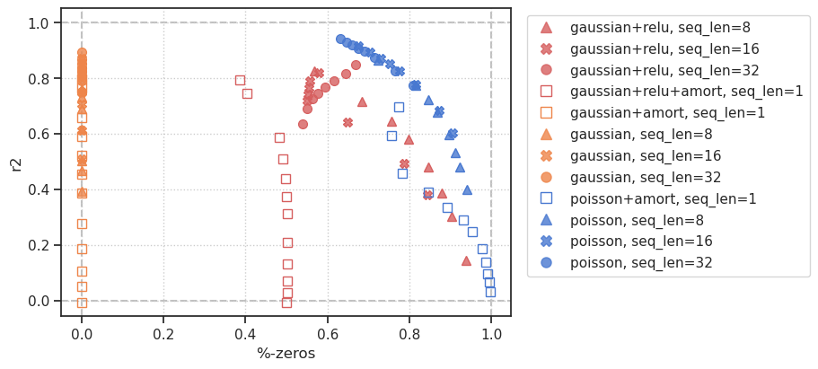
fig, ax = create_figure(1, 1, (2, 6))
sns.boxplot(
data=df_ratedist,
x='model_str',
y='distance',
order=['gaussian+amort', 'gaussian', 'gaussian+relu+amort', 'gaussian+relu', 'poisson'],
palette=pal_models,
hue='model_str',
ax=ax,
)
ax.axhline(0, ls='--', color='silver')
ax.tick_params(axis='x', rotation=-90)
ax.set(xlabel='')
add_grid(ax)
plt.show()
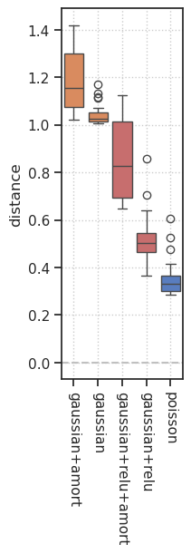
fig, ax = create_figure(1, 1, (2, 6))
sns.boxplot(
data=df_ratedist.loc[df_ratedist['latent_act'] != 'softplus'],
x='model_str',
y='distance',
order=['gaussian+amort', 'gaussian', 'gaussian+relu+amort', 'gaussian+relu', 'poisson'],
palette=pal_models,
hue='model_str',
ax=ax,
)
ax.axhline(0, ls='--', color='silver')
ax.tick_params(axis='x', rotation=-90)
ax.set(xlabel='')
add_grid(ax)
plt.show()
_df = df_ratedist.loc[
(df_ratedist['seq_len'] == 16) &
(df_ratedist['latent_act'] != 'softplus')
]
_df = _df.sort_values(by='distance', ascending=True)
_df
| type | latent_act | model_str | seq_len | kl_beta | amort | %-zeros | r2 | r2_map | distance | |
|---|---|---|---|---|---|---|---|---|---|---|
| 132 | poisson | None | poisson | 16 | 24.0 | False | 7.750223e-01 | 0.826882 | 0.916790 | 0.283875 |
| 131 | poisson | None | poisson | 16 | 20.0 | False | 7.526429e-01 | 0.850000 | 0.931343 | 0.289284 |
| 133 | poisson | None | poisson | 16 | 32.0 | False | 8.159058e-01 | 0.776233 | 0.879043 | 0.289763 |
| 130 | poisson | None | poisson | 16 | 16.0 | False | 7.290817e-01 | 0.872029 | 0.943479 | 0.299622 |
| 129 | poisson | None | poisson | 16 | 12.0 | False | 7.038352e-01 | 0.893830 | 0.953737 | 0.314620 |
| 128 | poisson | None | poisson | 16 | 8.0 | False | 6.751572e-01 | 0.915614 | 0.962413 | 0.335625 |
| 134 | poisson | None | poisson | 16 | 48.0 | False | 8.725250e-01 | 0.682278 | 0.799042 | 0.342341 |
| 135 | poisson | None | poisson | 16 | 64.0 | False | 9.054468e-01 | 0.602744 | 0.725726 | 0.408353 |
| 8 | gaussian | relu | gaussian+relu | 16 | 8.0 | False | 5.775826e-01 | 0.819666 | 0.893119 | 0.459300 |
| 9 | gaussian | relu | gaussian+relu | 16 | 12.0 | False | 5.572358e-01 | 0.789112 | 0.902145 | 0.490422 |
| 13 | gaussian | relu | gaussian+relu | 16 | 32.0 | False | 6.489045e-01 | 0.640412 | 0.834852 | 0.502565 |
| 10 | gaussian | relu | gaussian+relu | 16 | 16.0 | False | 5.535260e-01 | 0.764681 | 0.901117 | 0.504692 |
| 11 | gaussian | relu | gaussian+relu | 16 | 20.0 | False | 5.513880e-01 | 0.741810 | 0.895515 | 0.517605 |
| 12 | gaussian | relu | gaussian+relu | 16 | 24.0 | False | 5.495253e-01 | 0.718528 | 0.880643 | 0.531182 |
| 14 | gaussian | relu | gaussian+relu | 16 | 48.0 | False | 7.870011e-01 | 0.493272 | 0.697492 | 0.549674 |
| 15 | gaussian | relu | gaussian+relu | 16 | 64.0 | False | 8.425964e-01 | 0.380631 | 0.562859 | 0.639057 |
| 92 | gaussian | None | gaussian | 16 | 8.0 | False | 0.000000e+00 | 0.869541 | 0.960710 | 1.008474 |
| 93 | gaussian | None | gaussian | 16 | 12.0 | False | 0.000000e+00 | 0.849192 | 0.949945 | 1.011308 |
| 94 | gaussian | None | gaussian | 16 | 16.0 | False | 0.000000e+00 | 0.831164 | 0.938063 | 1.014153 |
| 95 | gaussian | None | gaussian | 16 | 20.0 | False | 7.567026e-08 | 0.798378 | 0.909807 | 1.020123 |
| 96 | gaussian | None | gaussian | 16 | 24.0 | False | 0.000000e+00 | 0.746620 | 0.860304 | 1.031601 |
| 97 | gaussian | None | gaussian | 16 | 32.0 | False | 0.000000e+00 | 0.707466 | 0.818450 | 1.041910 |
| 98 | gaussian | None | gaussian | 16 | 48.0 | False | 7.567026e-08 | 0.611748 | 0.707055 | 1.072725 |
| 99 | gaussian | None | gaussian | 16 | 64.0 | False | 0.000000e+00 | 0.510339 | 0.581997 | 1.113449 |
seq_tot = 1000
info_keys = ['type', 'latent_act', 'model_str', 'seq_len', 'kl_beta']
results_keys = ['r2', '%-zeros', 'du_norm']
df_convergence = collections.defaultdict(list)
for f in files:
cond_skip = (
'softplus' in f or
't-16' not in f or
'amort' in f
)
if cond_skip:
continue
# if f"t-16_b-24" not in f:
# continue
load = np.load(pjoin(results_dir, f), allow_pickle=True).item()
info, results = load['info'], load['results']
# info
for k in info_keys:
df_convergence[k].extend([info[k]] * seq_tot)
df_convergence['time'].extend(range(seq_tot))
# results
for k in results_keys:
df_convergence[k].extend(results[k])
df_convergence = pd.DataFrame(df_convergence)
df_convergence.shape
(24000, 9)
df_convergence
| type | latent_act | model_str | seq_len | kl_beta | time | r2 | %-zeros | du_norm | |
|---|---|---|---|---|---|---|---|---|---|
| 0 | gaussian | relu | gaussian+relu | 16 | 8.0 | 0 | 0.147592 | 0.066867 | 4.380859 |
| 1 | gaussian | relu | gaussian+relu | 16 | 8.0 | 1 | 0.341152 | 0.085178 | 3.659226 |
| 2 | gaussian | relu | gaussian+relu | 16 | 8.0 | 2 | 0.464746 | 0.104548 | 3.063977 |
| 3 | gaussian | relu | gaussian+relu | 16 | 8.0 | 3 | 0.547927 | 0.122689 | 2.623281 |
| 4 | gaussian | relu | gaussian+relu | 16 | 8.0 | 4 | 0.604529 | 0.139034 | 2.306428 |
| ... | ... | ... | ... | ... | ... | ... | ... | ... | ... |
| 23995 | poisson | None | poisson | 16 | 64.0 | 995 | 0.603049 | 0.905427 | 0.512628 |
| 23996 | poisson | None | poisson | 16 | 64.0 | 996 | 0.602943 | 0.905430 | 0.512113 |
| 23997 | poisson | None | poisson | 16 | 64.0 | 997 | 0.603210 | 0.905500 | 0.512319 |
| 23998 | poisson | None | poisson | 16 | 64.0 | 998 | 0.602777 | 0.905494 | 0.512895 |
| 23999 | poisson | None | poisson | 16 | 64.0 | 999 | 0.602744 | 0.905447 | 0.511866 |
24000 rows × 9 columns
from figures.final import fig_convergence
fig = fig_convergence(df_convergence, 16, 24)
fig = fig_convergence(df_convergence, 16, 16)
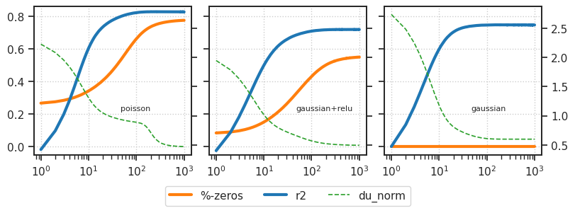
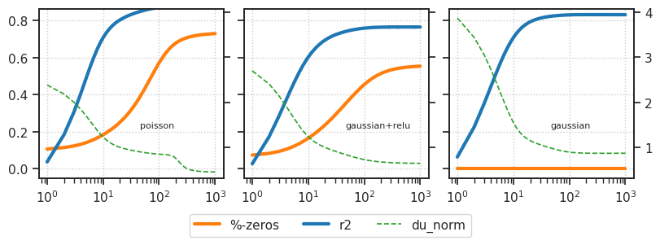
t, b = 16, 24
selected_df = df_convergence.loc[
(df_convergence['seq_len'] == t) &
(df_convergence['kl_beta'] == b)
]
_df_poisson = selected_df.loc[selected_df['model_str'] == 'poisson']
poisson_percent_zeros = _df_poisson['%-zeros'].values[-1]
poisson_r2 = _df_poisson['r2'].values[-1]
fig, axes = create_figure(1, 3, (6, 2), sharey='all')
for i, model in enumerate(['poisson', 'gaussian+relu', 'gaussian']):
_df = selected_df.loc[selected_df['model_str'] == model]
ax = axes[i]
ax.axhline(poisson_r2, color='C0', ls='--', lw=0.8)
ax.axhline(poisson_percent_zeros, color='C1', ls='--', lw=0.8)
ax.plot(_df['r2'].values, color='C0', lw=3)
ax.plot(_df['%-zeros'].values, color='C1', lw=3)
ax.set(xscale='log', ylim=(-0.01, 0.86))
ax.xaxis.set_major_locator(matplotlib.ticker.LogLocator(
base=10.0, subs=[1.0], numticks=4))
add_grid(axes)
plt.show()
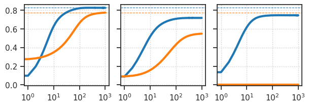
_df_poisson = selected_df.loc[selected_df['model_str'] == 'poisson']
poisson_percent_zeros = _df_poisson['%-zeros'].values[-1]
poisson_r2 = _df_poisson['r2'].values[-1]
fig, axes = create_figure(3, 1, (2.5, 5.5), sharex='all', sharey='all')
for i, model in enumerate(['poisson', 'gaussian+relu', 'gaussian']):
_df = selected_df.loc[selected_df['model_str'] == model]
ax = axes[i]
ax.axhline(poisson_r2, color='C0', ls='--', lw=0.8)
ax.axhline(poisson_percent_zeros, color='C1', ls='--', lw=0.8)
ax.plot(_df['r2'].values, color='C0', lw=3)
ax.plot(_df['%-zeros'].values, color='C1', lw=3)
ax.set(xscale='log', ylim=(-0.01, 0.86))
# ax.xaxis.set_major_locator(matplotlib.ticker.LogLocator(
# base=10.0, subs=[1.0], numticks=4))
add_grid(axes)
plt.show()
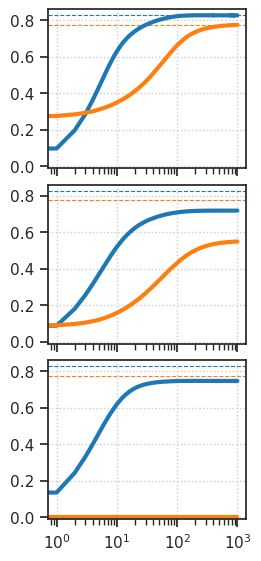
df_poisson = selected_df.loc[selected_df['model_str'] == 'poisson']
poisson_percent_zeros = df_poisson['%-zeros'].values[-1]
poisson_r2 = df_poisson['r2'].values[-1]
fig, axes = create_figure(3, 1, (4, 5.5), sharex='all') # Removed sharey='all'
# Keep track of the twin axes
right_axes = []
for i, model in enumerate(['poisson', 'gaussian+relu', 'gaussian']):
df = selected_df.loc[selected_df['model_str'] == model]
ax = axes[i]
# Create a twin axis and save reference
ax_right = ax.twinx()
right_axes.append(ax_right)
# New plot on right y-axis with corrected key
ax_right.plot(df['du_norm'].values, color='k', lw=1, ls='--', label='du_norm')
# Original plots on left y-axis
ax.axhline(poisson_r2, color='C0', ls='--', lw=0.8)
ax.axhline(poisson_percent_zeros, color='C1', ls='--', lw=0.8)
ax.plot(df['r2'].values, color='C0', lw=3, label='r2')
ax.plot(df['%-zeros'].values, color='C1', lw=3, label='%-zeros')
# Set scales and limits
ax.set(xscale='log', ylim=(-0.01, 0.86))
# You may need to adjust the right y-axis limits based on your data
# ax_right.set_ylim([min_val, max_val])
# Add labels
if i == 0:
ax.set_ylabel('r2 / %-zeros')
ax_right.set_ylabel('du_norm')
# Add model name
ax.text(0.02, 0.92, model, transform=ax.transAxes)
add_grid(axes)
# Add a legend with correct references
lines_left, labels_left = axes[0].get_legend_handles_labels()
lines_right, labels_right = right_axes[0].get_legend_handles_labels()
lines = lines_left + lines_right
labels = labels_left + labels_right
fig.legend(lines, labels, loc='upper center', bbox_to_anchor=(0.5, 0), ncol=3)
plt.tight_layout()
plt.show()
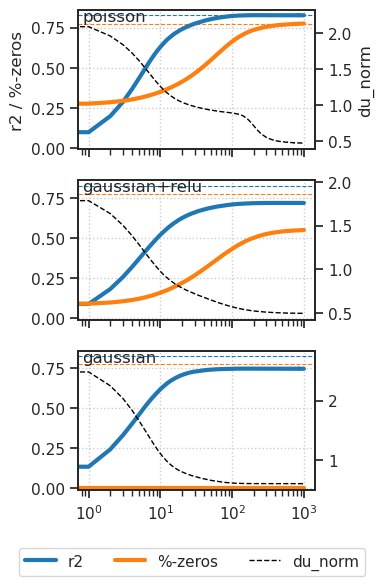
df_poisson = selected_df.loc[selected_df['model_str'] == 'poisson']
poisson_percent_zeros = df_poisson['%-zeros'].values[-1]
poisson_r2 = df_poisson['r2'].values[-1]
fig, axes = create_figure(3, 1, (4, 8.0), sharex='all') # Removed sharey='all'
# Keep track of the twin axes
right_axes = []
for i, model in enumerate(['poisson', 'gaussian+relu', 'gaussian']):
df = selected_df.loc[selected_df['model_str'] == model]
ax = axes[i]
# Create a twin axis and save reference
ax_right = ax.twinx()
right_axes.append(ax_right)
# New plot on right y-axis with corrected key - use zorder to force it to the background
du_norm_line = ax_right.plot(df['du_norm'].values, color='k', lw=1, ls='--', label='du_norm', zorder=1)
# Original plots on left y-axis with higher zorder values
ax.axhline(poisson_r2, color='C0', ls='--', lw=0.8, zorder=2)
ax.axhline(poisson_percent_zeros, color='C1', ls='--', lw=0.8, zorder=2)
r2_line = ax.plot(df['r2'].values, color='C0', lw=3, label='r2', zorder=3)
zeros_line = ax.plot(df['%-zeros'].values, color='C1', lw=3, label='%-zeros', zorder=4)
# Set scales and limits
ax.set(xscale='log', ylim=(-0.01, 0.86))
# You may need to adjust the right y-axis limits based on your data
# ax_right.set_ylim([min_val, max_val])
# Add labels
if i == 0:
ax.set_ylabel('r2 / %-zeros')
ax_right.set_ylabel('du_norm')
# Add model name
ax.text(0.02, 0.05, model, transform=ax.transAxes, zorder=5) # Text on top
add_grid(axes)
# Add a legend with correct references
lines_left, labels_left = axes[0].get_legend_handles_labels()
lines_right, labels_right = right_axes[0].get_legend_handles_labels()
lines = lines_left + lines_right
labels = labels_left + labels_right
fig.legend(lines, labels, loc='upper center', bbox_to_anchor=(0.5, 0), ncol=3)
plt.tight_layout()
plt.show()
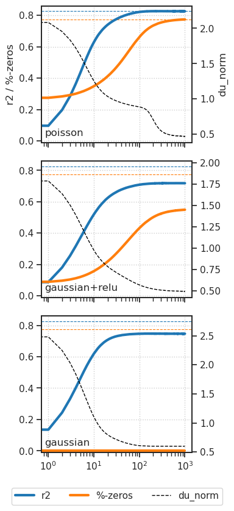
df_poisson = selected_df.loc[selected_df['model_str'] == 'poisson']
poisson_percent_zeros = df_poisson['%-zeros'].values[-1]
poisson_r2 = df_poisson['r2'].values[-1]
fig, axes = create_figure(3, 1, (4, 8.5), sharex='all') # Removed sharey='all'
# Keep track of the twin axes
right_axes = []
# First collect all du_norm values to determine consistent y-axis limits
all_du_norm_values = []
for model in ['poisson', 'gaussian+relu', 'gaussian']:
df = selected_df.loc[selected_df['model_str'] == model]
all_du_norm_values.extend(df['du_norm'].values)
# Calculate right y-axis limits
du_norm_min = min(all_du_norm_values)
du_norm_max = max(all_du_norm_values)
# For log scale, ensure minimum value is positive and curve stays within view
if du_norm_min <= 0:
# Find the smallest positive value
positive_values = [v for v in all_du_norm_values if v > 0]
if positive_values:
du_norm_min = min(positive_values) * 0.9 # Set minimum just below the smallest value
else:
du_norm_min = 0.001 # Fallback if no positive values
else:
# If already positive, still apply a small buffer to ensure visibility
du_norm_min *= 0.7
# Set upper limit with small buffer
du_norm_max *= 1.05
xs = np.arange(1, 1000 + 1)
for i, model in enumerate(['poisson', 'gaussian+relu', 'gaussian']):
df = selected_df.loc[selected_df['model_str'] == model]
ax = axes[i]
# Create a twin axis and save reference
ax_right = ax.twinx()
right_axes.append(ax_right)
# Set right y-axis to log scale
ax_right.set_yscale('linear')
# New plot on right y-axis
du_norm_line = ax_right.plot(xs, df['du_norm'].values, color='dimgrey', lw=1.2, ls='--', label='du_norm', zorder=1)
# Set limits to ensure curve is visible
ax_right.set_ylim(du_norm_min, du_norm_max)
# Original plots on left y-axis
ax.axhline(poisson_r2, color='C0', ls='--', lw=0.8, zorder=2)
ax.axhline(poisson_percent_zeros, color='C1', ls='--', lw=0.8, zorder=2)
r2_line = ax.plot(xs, df['r2'].values, color='C0', lw=3.5, label='r2', zorder=3)
zeros_line = ax.plot(xs, df['%-zeros'].values, color='C1', lw=3.5, label='%-zeros', zorder=4)
# Set scales and limits for left y-axis
ax.set(xscale='log', ylim=(-0.05, 0.86))
# Add labels
if i == 1:
ax.set_ylabel('r2 / %-zeros')
ax_right.set_ylabel('du_norm')
# Add model name
ax.text(0.51, 0.3, model, transform=ax.transAxes, zorder=5)
add_grid(axes)
# Add a legend with correct references
lines_left, labels_left = axes[0].get_legend_handles_labels()
lines_right, labels_right = right_axes[0].get_legend_handles_labels()
lines = lines_left + lines_right
labels = labels_left + labels_right
fig.legend(lines, labels, loc='upper center', bbox_to_anchor=(0.5, 0), ncol=3)
plt.show()
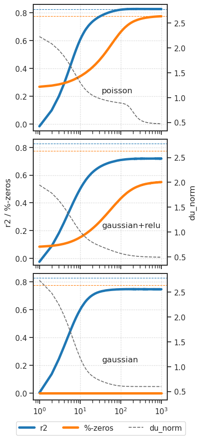
fig, ax = create_figure()
ax.plot(xs, df_poisson['du_norm'].values)
ax.set(xscale='log', yscale='log')
[None, None]
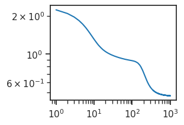
df_poisson = selected_df.loc[selected_df['model_str'] == 'poisson']
poisson_percent_zeros = df_poisson['%-zeros'].values[-1]
poisson_r2 = df_poisson['r2'].values[-1]
fig, axes = create_figure(1, 3, (8, 2.5), sharex='all', sharey='all')
# Keep track of the twin axes
right_axes = []
# First collect all du_norm values to determine consistent y-axis limits
all_du_norm_values = []
for model in ['poisson', 'gaussian+relu', 'gaussian']:
df = selected_df.loc[selected_df['model_str'] == model]
all_du_norm_values.extend(df['du_norm'].values)
# Calculate right y-axis limits
du_norm_min = min(all_du_norm_values)
du_norm_max = max(all_du_norm_values)
# For log scale, ensure minimum value is positive and curve stays within view
if du_norm_min <= 0:
# Find the smallest positive value
positive_values = [v for v in all_du_norm_values if v > 0]
if positive_values:
du_norm_min = min(positive_values) * 0.9 # Set minimum just below the smallest value
else:
du_norm_min = 0.001 # Fallback if no positive values
else:
# If already positive, still apply a small buffer to ensure visibility
du_norm_min *= 0.7
# Set upper limit with small buffer
du_norm_max *= 1.05
xs = np.arange(1, 1000 + 1)
for i, model in enumerate(['poisson', 'gaussian+relu', 'gaussian']):
df = selected_df.loc[selected_df['model_str'] == model]
ax = axes[i]
# Create a twin axis and save reference
ax_right = ax.twinx()
right_axes.append(ax_right)
# Set right y-axis to linear scale
ax_right.set_yscale('linear')
# New plot on right y-axis
du_norm_line = ax_right.plot(xs, df['du_norm'].values, color='C2', lw=1.2, ls='--', label='du_norm', zorder=1)
# Set limits to ensure curve is visible
ax_right.set_ylim(du_norm_min, du_norm_max)
if i < 2:
ax_right.set(yticks=[], yticklabels=[])
# Original plots on left y-axis
# ax.axhline(poisson_percent_zeros, color='firebrick', ls='--', lw=0.8, zorder=2)
# ax.axhline(poisson_r2, color='slateblue', ls='--', lw=0.8, zorder=2)
zeros_line = ax.plot(xs, df['%-zeros'].values, color='C1', lw=3., label='%-zeros', zorder=3)
r2_line = ax.plot(xs, df['r2'].values, color='C0', lw=3., label='r2', zorder=4)
# Set scales and limits for left y-axis
ax.set(xscale='log', ylim=(-0.05, 0.86))
# Add model name
ax.text(0.55, 0.3, model, transform=ax.transAxes, fontsize=8, zorder=5)
add_grid(axes)
# Add a legend with correct references
lines_left, labels_left = axes[0].get_legend_handles_labels()
lines_right, labels_right = right_axes[0].get_legend_handles_labels()
lines = lines_left + lines_right
labels = labels_left + labels_right
fig.legend(lines, labels, loc='upper center', bbox_to_anchor=(0.5, 0), ncol=3)
plt.show()
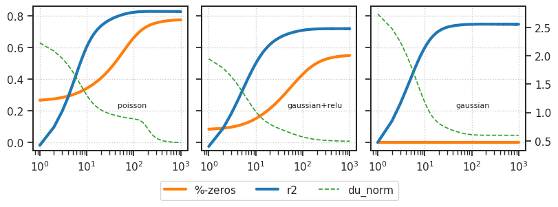
plot(results['r2'])
[<matplotlib.lines.Line2D at 0x7f17636a5510>]
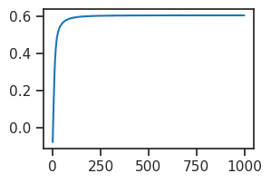
pal_models = get_palette_models()
markers = {1: '.', 8: 'D', 16: 'o', 32: 's'}
fig, ax = create_figure(1, 1, (8, 4))
_df = df.loc[df['latent_act'] != 'softplus']
sns.scatterplot(
data=_df,
x='%-zeros',
y='r2',
palette=pal_models,
hue='model_str',
style='seq_len',
markers=markers,
s=100,
alpha=0.8,
ax=ax,
# fillstyle=['none', 'full', 'full', 'full'] # Controls which markers are filled
)
ax.axvline(0, color='silver', ls='--', zorder=0)
ax.axvline(1, color='silver', ls='--', zorder=0)
ax.axhline(0, color='silver', ls='--', zorder=0)
ax.axhline(1, color='silver', ls='--', zorder=0)
move_legend(ax, (1.0, 1.015))
add_grid(ax)
# ax_square(ax)
plt.show()
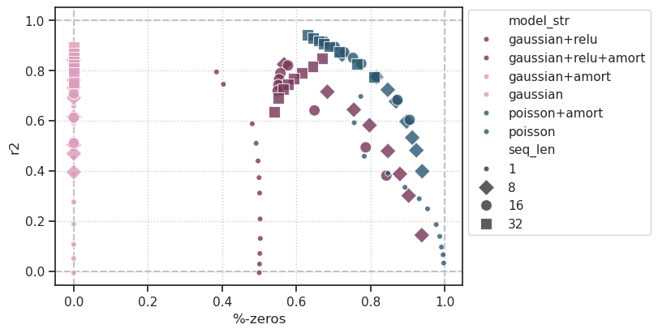
def get_palette_models():
kws_1 = dict(start=2.6, rot=0.03, light=0.7, dark=0.3)
kws_2 = dict(start=0.6, rot=0.03, light=0.7, dark=0.3)
cube_1 = get_cubehelix_palette(n_colors=3, **kws_1)
cube_2 = get_cubehelix_palette(n_colors=3, **kws_2)
pal_models = {
'poisson': cube_1[-1],
'poisson+amort': cube_1[-1],
'gaussian': cube_2[0],
'gaussian+amort': cube_2[0],
'gaussian+relu': cube_2[2],
'gaussian+relu+amort': cube_2[2],
'gaussian+softplus': cube_2[1],
'gaussian+softplus+amort': cube_2[1],
}
return pal_models
pal_models = get_palette_models()
def get_palette_models():
kws_1 = dict(start=2.6, rot=0.03, light=0.7, dark=0.3)
kws_2 = dict(start=0.6, rot=0.03, light=0.7, dark=0.3)
cube_1 = get_cubehelix_palette(n_colors=5, **kws_1)
cube_2 = get_cubehelix_palette(n_colors=5, **kws_2)
pal_models = {
'poisson': cube_1[-2],
'poisson+amort': cube_1[-2],
'gaussian': cube_2[0],
'gaussian+amort': cube_2[0],
'gaussian+relu': cube_2[-2],
'gaussian+relu+amort': cube_2[-2],
'gaussian+softplus': cube_2[1],
'gaussian+softplus+amort': cube_2[1],
}
return pal_models
pal_models = get_palette_models()
fig, axes = create_figure(1, 2, (17, 6))
_df = df.loc[df['latent_act'] != 'softplus']
sns.scatterplot(
data=_df,
x='%-zeros',
y='r2',
palette='muted', # pal_models,
hue='model_str',
style='seq_len',
s=120,
ax=axes[0],
)
sns.scatterplot(
data=_df,
x='%-zeros',
y='r2_map',
palette='muted', # pal_models,
hue='model_str',
style='seq_len',
s=120,
ax=axes[1],
)
for ax in axes.flat:
ax.axvline(0, color='silver', ls='--', zorder=0)
ax.axvline(1, color='silver', ls='--', zorder=0)
ax.axhline(0, color='silver', ls='--', zorder=0)
ax.axhline(1, color='silver', ls='--', zorder=0)
# ax_square(ax)
plt.show()
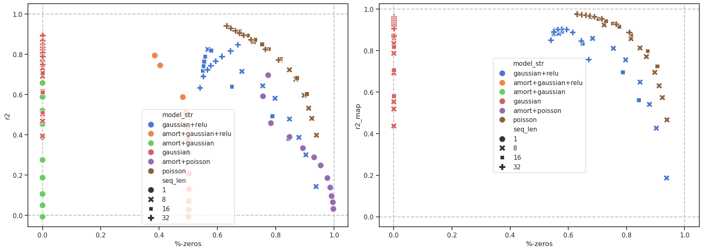
fig, ax = create_figure(1, 1, (2, 6))
sns.boxplot(
data=df,
x='model_str',
y='distance',
order=['gaussian', 'gaussian+relu', 'poisson'],
palette=pla_models,
hue='model_str',
ax=ax,
)
ax.axhline(0, ls='--', color='silver')
ax.tick_params(axis='x', rotation=-90)
ax.set(xlabel='')
add_grid(ax)
plt.show()
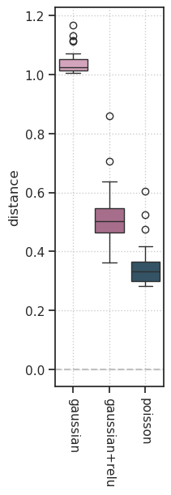
fig, axes = create_figure(1, 3, (5, 6), sharey='all')
for i, model_str in enumerate(['gaussian', 'gaussian+relu', 'poisson']):
ax = axes[i]
sns.boxplot(
data=df.loc[df['model_str'] == model_str],
x=translate['seq_len'],
y='distance',
# order=['gaussian', 'gaussian+relu', 'poisson'],
palette=pla_models,
hue='model_str',
ax=ax,
)
sns.move_legend(ax, loc='best', fontsize=8, title_fontsize=8)
ax.axhline(0, ls='--', color='silver')
ax.tick_params(axis='x', rotation=-90)
ax.set(xlabel='')
add_grid(axes)
plt.show()
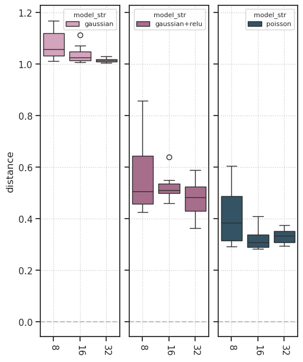
_df
| type | latent_act | model_str | $T_\text{train}$ | kl_beta | %-zeros | $R^2$ | r2_map | distance | |
|---|---|---|---|---|---|---|---|---|---|
| 84 | poisson | None | poisson | 16 | 24.0 | 7.750223e-01 | 0.826882 | 0.916790 | 0.283875 |
| 83 | poisson | None | poisson | 16 | 20.0 | 7.526429e-01 | 0.850000 | 0.931343 | 0.289284 |
| 85 | poisson | None | poisson | 16 | 32.0 | 8.159058e-01 | 0.776233 | 0.879043 | 0.289763 |
| 82 | poisson | None | poisson | 16 | 16.0 | 7.290817e-01 | 0.872029 | 0.943479 | 0.299622 |
| 81 | poisson | None | poisson | 16 | 12.0 | 7.038352e-01 | 0.893830 | 0.953737 | 0.314620 |
| 80 | poisson | None | poisson | 16 | 8.0 | 6.751572e-01 | 0.915614 | 0.962413 | 0.335625 |
| 86 | poisson | None | poisson | 16 | 48.0 | 8.725250e-01 | 0.682278 | 0.799042 | 0.342341 |
| 87 | poisson | None | poisson | 16 | 64.0 | 9.054468e-01 | 0.602744 | 0.725726 | 0.408353 |
| 56 | gaussian | None | gaussian | 16 | 8.0 | 0.000000e+00 | 0.869541 | 0.960710 | 1.008474 |
| 57 | gaussian | None | gaussian | 16 | 12.0 | 0.000000e+00 | 0.849192 | 0.949945 | 1.011308 |
| 58 | gaussian | None | gaussian | 16 | 16.0 | 0.000000e+00 | 0.831164 | 0.938063 | 1.014153 |
| 59 | gaussian | None | gaussian | 16 | 20.0 | 7.567026e-08 | 0.798378 | 0.909807 | 1.020123 |
| 60 | gaussian | None | gaussian | 16 | 24.0 | 0.000000e+00 | 0.746620 | 0.860304 | 1.031601 |
| 61 | gaussian | None | gaussian | 16 | 32.0 | 0.000000e+00 | 0.707466 | 0.818450 | 1.041910 |
| 62 | gaussian | None | gaussian | 16 | 48.0 | 7.567026e-08 | 0.611748 | 0.707055 | 1.072725 |
| 63 | gaussian | None | gaussian | 16 | 64.0 | 0.000000e+00 | 0.510339 | 0.581997 | 1.113449 |